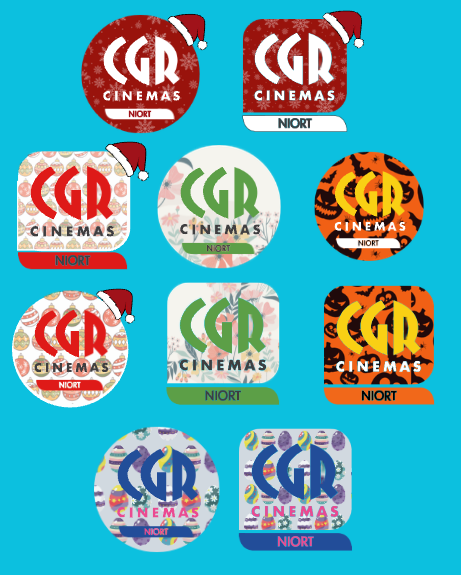
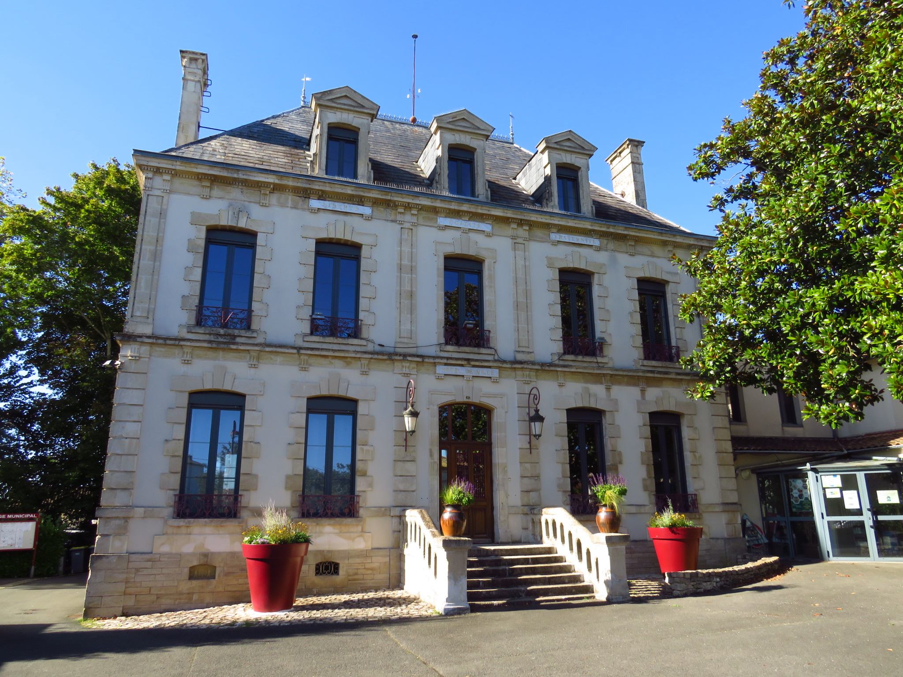
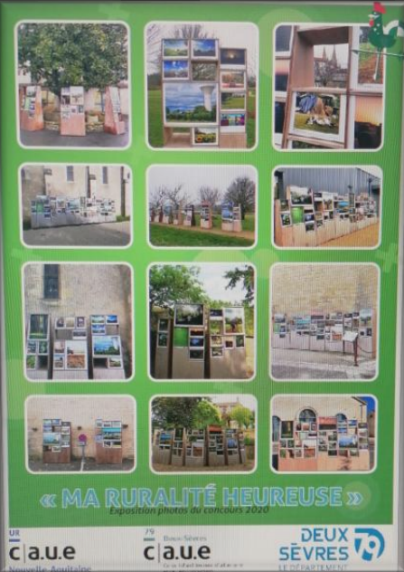
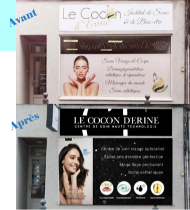
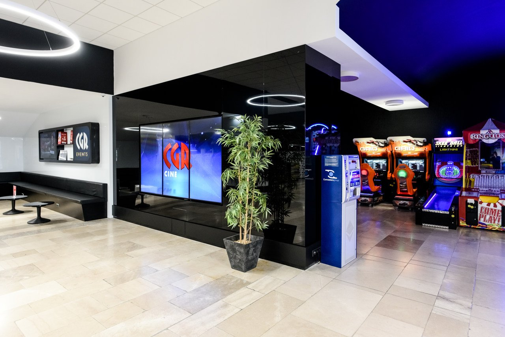

Expériences professionnelles
Découvrez mon parcours professionnelles
Stage
CGR Niort
Stage de 5 semaines au CGR de Niort
Missions
- - Création de Stories, affiches et publications Instagram sur Canva.
- - Création de Kahoot pour un événement.
- - Conception de différents types de logos du CGR de Niort (Noël, Pâques, etc.).
Compétences développées
- Créativité et communication visuelle
- Maîtrise de Canva
- Gestion des réseaux sociaux

Stage
Mairie de La Crèche
Stage de 6 semaines à la mairie de La Crèche (79)
Missions
- - Réalisation d'une vidéo présentant l'école de musique pour la diffuser au cinéma de la ville.
- - Conception d'un présentoir permettant de mettre le magazine de la ville à disposition dans des lieux publics et des magasins.
Compétences développées
- Réalisation audiovisuelle
- Conception graphique
- Autonomie et gestion de projet

→ Vidéo réalisée
Stage
CAUE 79
Deux stages de 3 et 5 semaines au CAUE 79 (Conseil d'Architecture, d'Urbanisme et de l'Environnement) à Niort
Missions
- - Création d'affiches pour l'exposition d'un concours photo.
- - Réalisation d'une brochure et de plusieurs couvertures.
Compétences développées
- Création graphique et mise en page
- Adaptation aux besoins d'un client]
- Sens de l'esthétique

Stage
Niort Plan Reprographie
Stage de 3 semaines à NPR (Niort Plan Reprographie)
Missions
- - Réalisation de mockups et de planches d'ambiance pour un client.
- - Création de cartes de visite avec logo et monogramme.
Compétences développées
- Création de supports de communication
- Réalisation de maquettes graphiques
- Compréhension des attentes clients

Travail d'été
CGR de Niort
Été 2026 : employée polyvalente au CGR de Niort
Missions
- Employée polyvalente au CGR de Niort
Compétences développées
- Relation client
- Gestion des priorités
- Travail en équipe
